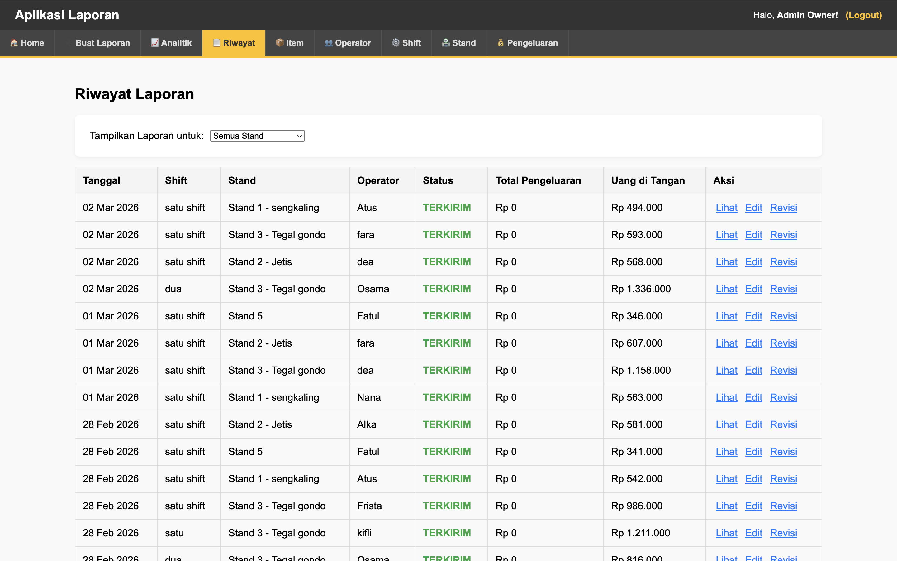

DKriuk — Financial Management System
A lightweight mini-ERP for small businesses — covering daily revenue reporting, opening capital tracking, stock depletion monitoring, expense logging, and end-of-day balance checking, all in one unified dashboard.

- Role
- Full-stack Developer
- Period
- 2025 – Present
- Type
- Mini ERP
- Status
- In use
Background
Small food and retail businesses often operate with no financial visibility — revenue is counted at the end of the day from memory, stock runs out without warning, and expenses are tracked on scraps of paper or not at all. By the time the owner realises the numbers don't add up, the damage is already done.
DKriuk was built to solve this for DKriuk — a small crispy snack business that needed a simple, daily-use financial system without the complexity of full ERP software. The goal was something lightweight enough for non-technical staff to use every single day.
- Daily revenue tracked manually or not at all
- Stock depletion discovered only when items run out
- No way to verify end-of-day cash vs. recorded sales
- Expenses and capital not tracked in one place
- Daily revenue + expense logging in one place
- Opening capital input per session
- Stock depletion alerts before items run out
- End-of-day balance check to catch discrepancies
Key Features
Log and review daily income by item or category. Tracks total revenue per session and aggregates into weekly and monthly views.
Record starting cash at the beginning of each business day. Used as the baseline for the end-of-day balance check calculation.
Track which items have been depleted or are running low. Alerts surface on the dashboard before stock hits zero so restocking can happen proactively.
Record operational expenses by category (supplies, transport, utilities, etc.) with date and notes. Feeds directly into the daily balance calculation.
End-of-day reconciliation: compares opening capital + recorded revenue against expenses + expected closing cash. Flags discrepancies automatically.
Overview dashboard showing net profit, total revenue, total expenses, and trends over time — with Chart.js visualisations for at-a-glance insight.
Balance Check Logic
The balance check is the most critical feature — it gives the owner a clear answer at the end of every day: does the cash in hand match what the records say? The formula is straightforward but powerful for catching errors, theft, or unrecorded transactions.
Balance Status Outcomes
Actual cash matches expected closing amount. All transactions accounted for correctly.
Actual cash is less than expected. Possible unrecorded expense, missing transaction, or cash discrepancy.
Actual cash exceeds expected. Possible unrecorded revenue or duplicate expense entry that needs reviewing.